Actividad 10 Lab: Traversal sequences stripped with superfluous URL-decode
Reporte Original
Reporte de Actividad Detallado // Extensión: .pdf
Nivel de Laboratorio
PRACTITIONER
Clasificación
Path Traversal (CWE-22). Bypass de filtro anti-traversal mediante técnica de doble codificación URL.
Objetivo
Recuperar el archivo /etc/passwd evadiendo el filtro que bloquea secuencias de traversal antes de que la aplicación decodifique la entrada.
Marco teórico y explicación técnica
La particularidad de este laboratorio está en el orden en que se aplican sus dos mecanismos de defensa. La aplicación primero bloquea cualquier entrada que contenga secuencias de traversal ("../") y, únicamente después de esa validación, realiza un URL-decode del valor recibido antes de usarlo. A esa segunda decodificación se le llama "superflua", porque la aplicación no debería necesitar decodificar el valor una segunda vez, y es precisamente ese paso adicional el que abre la puerta al bypass.
Esto significa que basta con enviar la secuencia de traversal codificada con un nivel adicional (doble URL-encode). Al pasar por la capa 1 (HTTP), el payload se decodifica una vez, convirtiéndose en un código simple (%2e%2e%2f). Cuando el filtro (capa 2) lo inspecciona, no ve secuencias relativas sino porcentajes, por lo que lo aprueba. Finalmente, la capa 3 (la decodificación superflua de la aplicación) revela la secuencia "../" original, eludiendo la protección de manera transparente.
Virtual Backend Sandbox (Double Encode Bypass)
Procedimiento paso a paso y evidencias
Paso 1
Se abrió Burp Suite Community Edition y, en la ventana de bienvenida, se seleccionó "Temporary project in memory", adecuada para una sesión de práctica puntual que no requiere persistirse en disco.
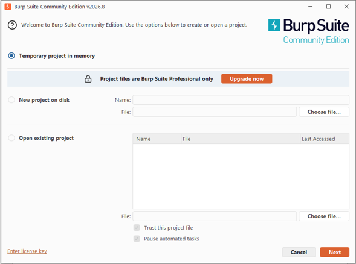
Paso 2
En la siguiente ventana se eligió "Use Burp defaults" y se presionó "Start Burp", inicializando la herramienta con su configuración estándar (proxy en 127.0.0.1:8080 y certificado CA propio para tráfico HTTPS).
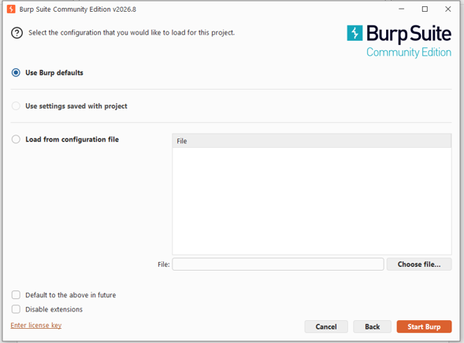
Paso 3
Burp abrió su panel principal en la pestaña Proxy › Intercept, con el interceptor apagado y sin listeners de proxy activos todavía, estado normal antes de comenzar a capturar tráfico.
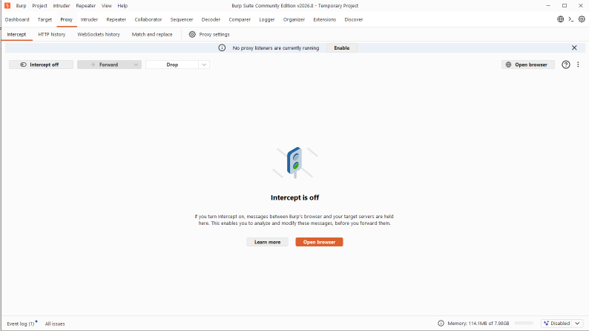
Paso 4
Desde el navegador predeterminado se accedió a la página de descripción del laboratorio en PortSwigger Web Security Academy, donde se puede leer que la aplicación bloquea secuencias de traversal y luego realiza un URL-decode de la entrada. Se dio clic en "ACCESS THE LAB" para generar la instancia.
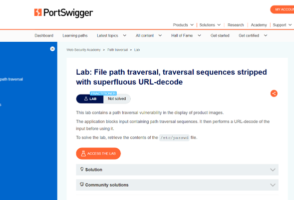
Paso 5
El navegador redirigió a la instancia única del laboratorio, con una URL aleatoria asociada a la sesión, mostrando la tienda "We Like To Shop" en estado "Not solved". De la barra de direcciones se copió dicha URL para reutilizarla en el navegador integrado de Burp.
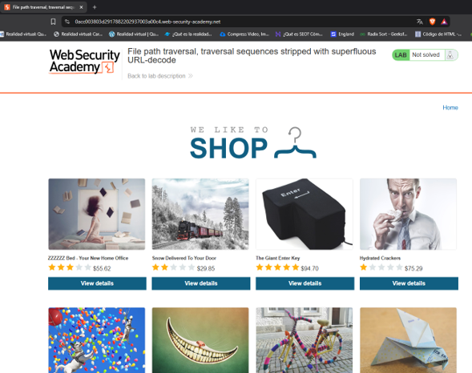
Paso 6
Se regresó a Burp Suite y se activó "Intercept on" en la pestaña Proxy, de modo que toda petición quedara detenida hasta reenviarse manualmente. Después se utilizó "Open browser" para abrir la instancia de Chromium preconfigurada por Burp con el proxy y el certificado CA correctos.
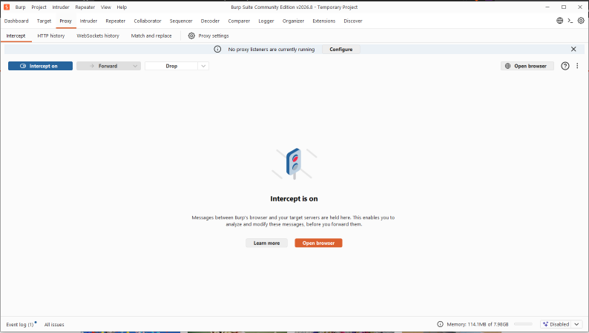
Paso 7
En el navegador embebido de Burp se pegó la URL de la instancia obtenida en el paso 5. Al cargar la página, Burp interceptó de inmediato la primera petición: GET / dirigida al dominio de la instancia, correspondiente al documento HTML principal. Se presionó "Forward" para permitir que la carga continuara.
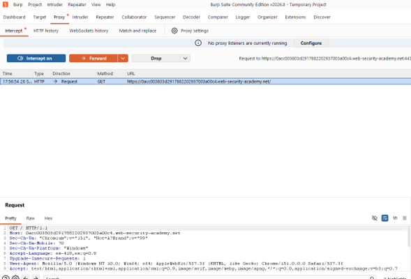
Paso 8
Al seguir reenviando peticiones, Burp fue deteniendo, una a una, las numerosas solicitudes GET /image?filename=N.jpg generadas automáticamente para cargar las miniaturas del catálogo de productos, dejando en evidencia el patrón de referencia directa a archivos que utiliza la aplicación.
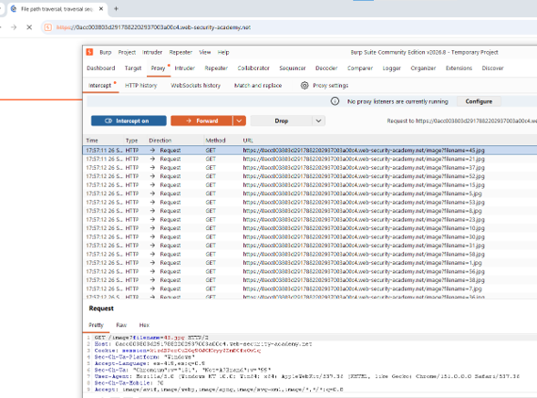
Paso 9
Sobre una de estas peticiones (filename=45.jpg) se dio clic derecho y se seleccionó "Send to Repeater" (Ctrl+R), enviando una copia exacta a la pestaña Repeater para su posterior manipulación manual.
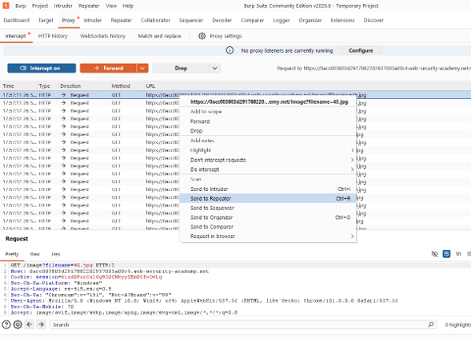
Paso 10
Como prueba de control, se envió primero la petición sin modificar (filename=45.jpg). El servidor respondió 200 OK con Content-Type: image/jpeg y el contenido binario de la imagen, confirmando el comportamiento normal del endpoint antes de iniciar los intentos de explotación.
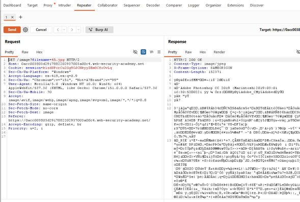
Paso 11
Como primer intento se probó filename=/etc/passwd, una ruta absoluta simple sin codificación ni traversal relativo. El servidor respondió 400 Bad Request con el mensaje "No such file", descartando que el endpoint aceptara rutas absolutas sin más.
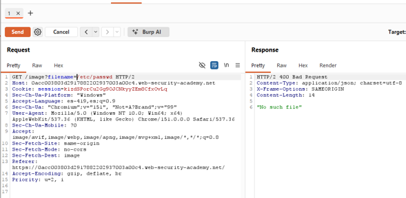
Paso 12
Como segundo intento se utilizó el payload de traversal relativo clásico, filename=../../../../etc/passwd. El servidor volvió a responder 400 Bad Request con "No such file", confirmando que la aplicación detecta y bloquea la secuencia "../" cuando aparece de forma literal en la entrada.
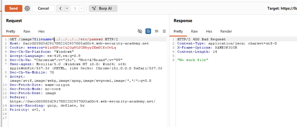
Paso 13
Como tercer intento se probó la técnica de bypass por sanitización no recursiva vista en un laboratorio previo, filename=....//....//....//....//etc/passwd. El resultado fue nuevamente 400 Bad Request con "No such file": este laboratorio filtra las secuencias de traversal de una manera distinta, lo cual es útil para descartar hipótesis.
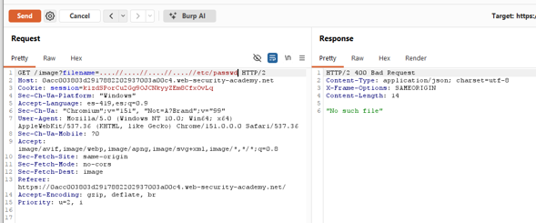
Paso 14
Se seleccionó el texto ../../../../etc/passwd dentro del campo Request de Repeater y, mediante el menú contextual, se navegó a Convert selection › URL › "URL-encode all characters", lo que codificó cada carácter de la cadena a su representación porcentual.
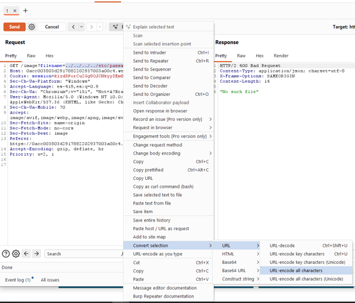
Paso 15
Se envió la petición con la carga útil codificada una sola vez. El servidor respondió nuevamente 400 Bad Request con "No such file". Esto ocurre porque la capa HTTP decodifica automáticamente ese único nivel de codificación antes de que el filtro actúe, dejando expuesta la secuencia "../" en texto plano, la cual es detectada y bloqueada exactamente igual que en el paso 12.
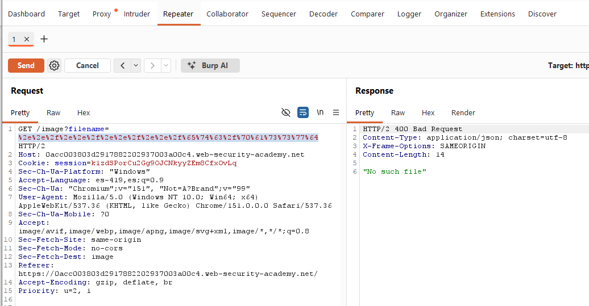
Paso 16
Se seleccionó el texto ya codificado (que en este punto contiene caracteres "%") y se le aplicó nuevamente Convert selection › URL › "URL-encode all characters", generando así una segunda capa de codificación (el carácter "%" de cada secuencia se codifica a su vez como "%25").
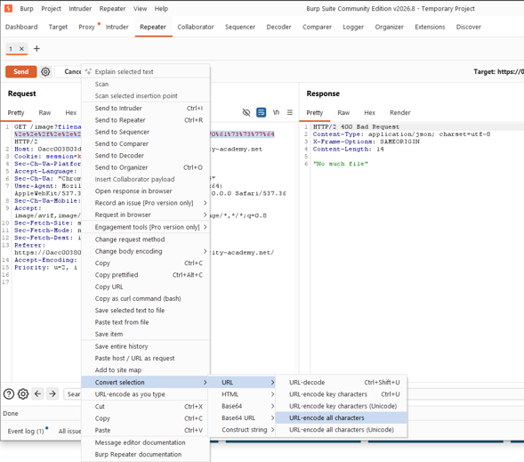
Paso 17
Al enviar la petición con la carga útil doblemente codificada, el servidor respondió 200 OK con Content-Type: image/jpeg (nuevamente sin validar el contenido real de la respuesta), pero el cuerpo contenía el listado completo de cuentas del sistema operativo del servidor (root, daemon, bin, sys, www-data, backup, entre otras), es decir, el contenido real de /etc/passwd. El panel Inspector de Burp confirmó que el valor final decodificado era exactamente ../../../../etc/passwd.
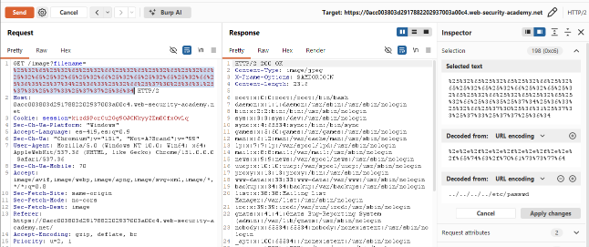
Paso 18
Finalmente, se regresó a la pestaña del laboratorio en PortSwigger y se refrescó la página. La plataforma mostró el banner "Congratulations, you solved the lab!" y el estado cambió de "Not solved" a "Solved", acreditando la explotación exitosa de la vulnerabilidad.
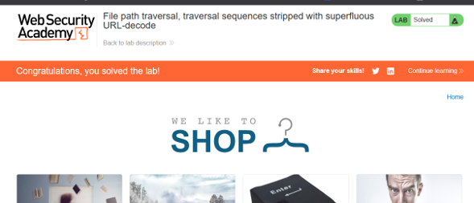
Explicación técnica de los payloads[cite: 11]
Ruta absoluta sin codificación ni traversal relativo[cite: 11]. La aplicación concatena este valor con su directorio base de imágenes, por lo que /etc/passwd no corresponde a ningún archivo existente dentro de esa carpeta; el servidor responde "No such file"[cite: 11]. Este intento sirvió para descartar que el endpoint resolviera rutas absolutas sin ninguna restricción[cite: 11].
Payload de traversal relativo estándar, en texto plano[cite: 11]. La aplicación inspecciona la entrada, encuentra la secuencia literal "../" y bloquea la petición directamente, tal como anuncia el enunciado del laboratorio ("The application blocks input containing path traversal sequences")[cite: 11].
Es la técnica de bypass por sanitización no recursiva (eliminar solo una vez la subcadena "../", dejando otra reconstruida) que sí funcionó en un laboratorio distinto de esta misma serie[cite: 11]. Aquí no tuvo efecto porque el mecanismo de defensa de este laboratorio es diferente: no se trata de una sustitución de patrones que pueda reconstruirse, sino de un bloqueo directo de la entrada cuando contiene "../", seguido de una decodificación[cite: 11]. Al no contener el patrón bloqueado en su forma literal ("....//" no es "../"), pero tampoco decodificarse a nada distinto de sí misma (no hay caracteres %XX que decodificar), la ruta resultante simplemente no corresponde a ningún archivo real[cite: 11].
Es la secuencia ../../../../etc/passwd codificada una sola vez en URL[cite: 11]. Falla porque la capa HTTP decodifica automáticamente los caracteres %XX del query string antes de que el valor llegue a la lógica de la aplicación; en el momento en que el filtro anti-traversal examina la entrada, esta ya se ve como ../../../../etc/passwd en texto plano, y por lo tanto es detectada y bloqueada exactamente igual que el payload del punto 4.2[cite: 11].
Cada carácter de la carga útil original fue codificado dos veces: primero a su forma porcentual ("../" → "%2e%2e%2f") y, después, cada carácter "%" de esa forma fue codificado a su vez como "%25", produciendo secuencias como "%252e%252e%252f"[cite: 11].
Cuando la petición llega al servidor, la capa HTTP realiza su decodificación automática habitual: convierte "%25" en "%", eliminando así una sola capa de codificación[cite: 11]. El resultado, en ese punto, es exactamente el payload de un solo nivel de codificación (%2e%2e%2f...) — es decir, una cadena que todavía contiene caracteres porcentuales y no la secuencia literal "../"[cite: 11].
El filtro anti-traversal de la aplicación examina la entrada en este punto exacto (después de la única decodificación automática, antes de cualquier decodificación adicional del propio código de la aplicación) y, como no encuentra la subcadena literal "../", deja pasar la petición sin bloquearla[cite: 11].
Inmediatamente después, la aplicación realiza su propia decodificación URL explícita y superflua sobre el valor ya "validado", convirtiendo %2e%2e%2f%2e%2e%2f... en la secuencia real ../../../../etc/passwd, la cual se utiliza sin más controles para construir la ruta final del archivo a leer, logrando así el acceso arbitrario a /etc/passwd[cite: 11].
Análisis Estructural del Bypass (Double Encode)
| Estado | Valor de la Cadena | Efecto en el Servidor |
|---|---|---|
| Original | ../../../ | Si se manda así, el filtro de seguridad lo detecta y lo bloquea instantáneamente. |
| Single Encode | %2e%2e%2f... | HTTP lo decodifica automáticamente antes del filtro, regresando al estado original y siendo bloqueado. |
| Double Encode | %252e%252e%252f... | HTTP lo decodifica y deja un código simple (%2e%2e%2f). El filtro no ve el peligro y lo deja pasar. Luego la app aplica un decode extra, revelando la ruta final. |
Mitigación recomendada
- Aplicar cualquier validación de seguridad (incluyendo la detección de secuencias de traversal) únicamente sobre la forma final, completamente decodificada y normalizada de la entrada, nunca antes de que se hayan aplicado todas las decodificaciones que el propio código vaya a ejecutar.
- Eliminar decodificaciones redundantes o superfluas del código: si el framework o servidor ya decodifica la entrada automáticamente, el código de la aplicación no debe volver a invocar una función de URL-decode sobre el mismo valor.
- Adoptar un enfoque de lista blanca (whitelist) para el nombre de archivo, validando contra un patrón estricto, en lugar de intentar bloquear patrones específicos como "../", que pueden ser ofuscados mediante codificación.
- Canonicalizar la ruta resultante (equivalente a realpath()) después de todas las transformaciones y decodificaciones, y verificar que permanezca dentro del directorio base autorizado antes de acceder al archivo.
- Registrar y alertar sobre peticiones que contengan múltiples niveles de codificación URL en sus parámetros, ya que rara vez corresponden a un uso legítimo de la aplicación y son un indicador común de intentos de evasión de WAF.